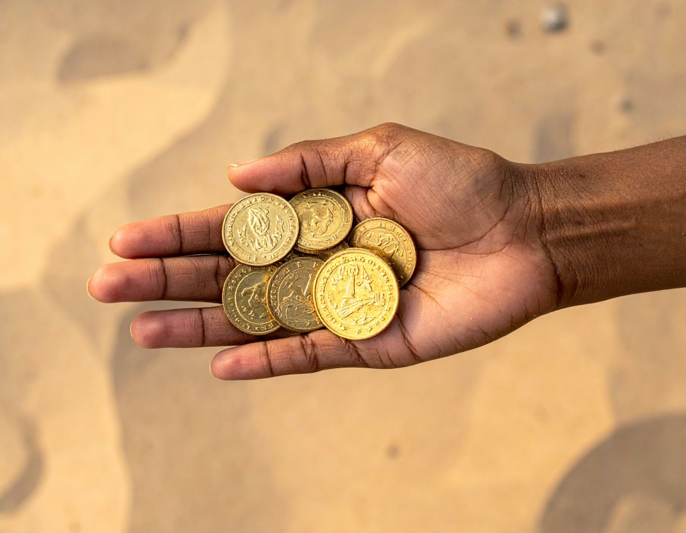

|
The farther Brooklyn walked, the heavier the bag seemed to become,
until it felt less like treasure and more like something dangerous.
Her eyes darted across the empty shoreline, paranoia prickling at
the back of her neck as she imagined someone spotting her. The police
were still fresh in her mind, and with every step, a new question
pounded harder inside her head: what was she supposed to do with the
gold now? She studdied some of the gold in one of her hands as she thought.
Part of her wanted to bury it somewhere deep beneath the
dunes until things calmed down, then come back for it later when no
one was watching. But another part of her knew reporting it might be
the only safe choice, even if it meant explaining how she’d found it
in the first place. Brooklyn slowed near the edge of the beach, torn
between fear and temptation, while the waves crashed behind her like
a warning she couldn’t ignore.
|

|